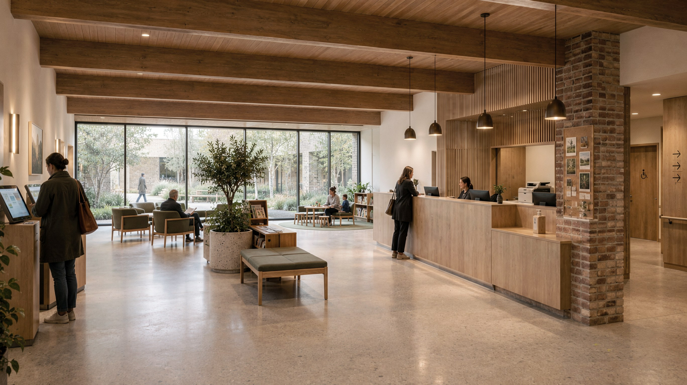
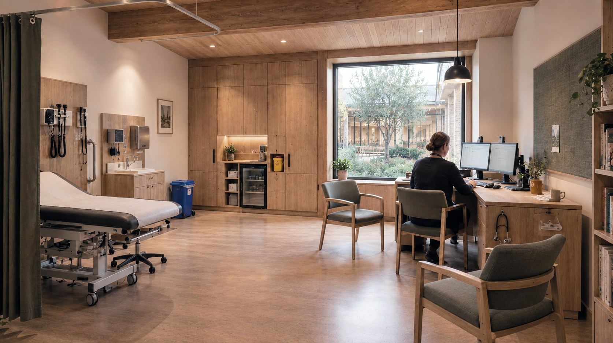

The brief is HBN 11-01, not a house. Five consulting rooms, two treatment rooms, a minor-procedures room, reception, waiting, staff base, and a community / group room that can run in the evening without opening the clinical wing. List size about 8,000. Target: inner and outer London neighbourhood centres.
The plan wraps a 100 m² courtyard so waiting looks onto planting, not a car park. The colonnade holds the street. Bikes, EV bays and a modest drop-off sit in the remaining plot of c. 0.2 ha.


Patients arrive under the colonnade, check in at a timber desk, and wait in a hall that looks onto the court. Clinical rooms take the quieter edges. The community room locks off from the practice so it can be used after hours.
Fabric is exposed glulam, handmade brick, timber cladding, standing-seam zinc. Heat and air via MVHR and an air-source heat pump. This is a concept study for a typical London neighbourhood plot — not a named, built contract. Cost bands need a QS against a real site.
Concept
Project
- Location
- Inner / outer London neighbourhood centres
- Building Type
- GP surgery with evening community use
- GIA
- 850–950 m² + 100 m² courtyard
- Site
- c. 1,800–2,200 m² (c. 0.2 ha)
- Stage
- Concept
Facts
- Sector
- Healthcare / civic
- Programme
- 5 consulting · 2 treatment · 1 minor procedures · community room
- Guidance
- HBN 11-01